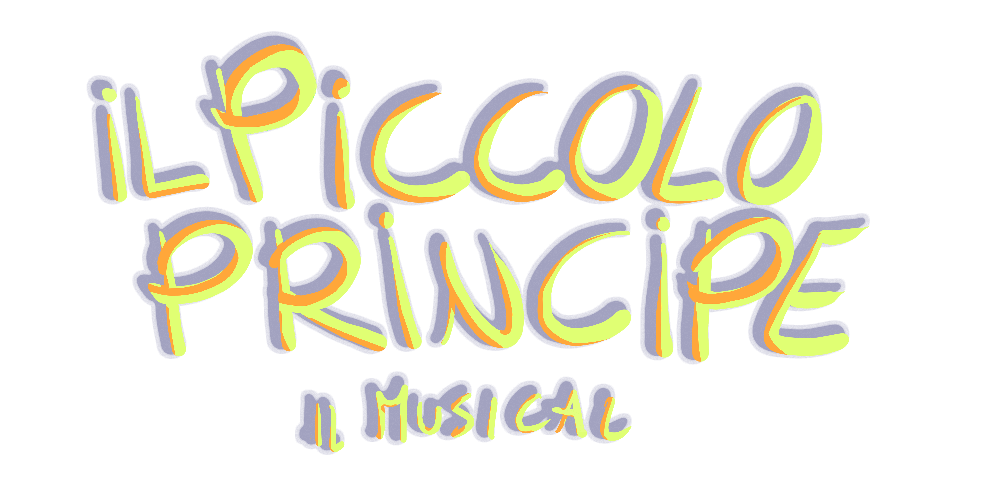
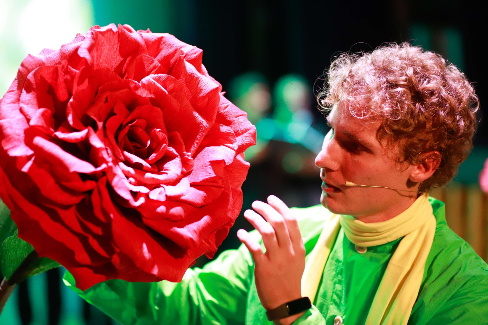
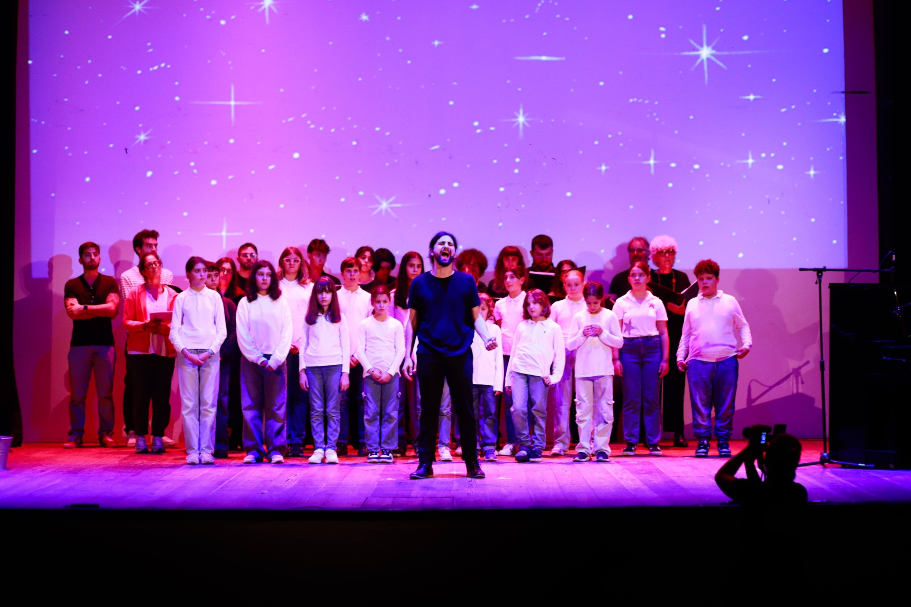

<!DOCTYPE html>
<html lang="it">
<head>
    <meta charset="UTF-8">
    <meta name="viewport" content="width=device-width, initial-scale=1.0">
    <title>Il Piccolo Principe - Il Musical</title>
    <!-- Inclusione di Tailwind CSS per lo styling -->
    <script src="https://cdn.tailwindcss.com"></script>
    <!-- Inclusione di Font Awesome per le icone -->
    <link rel="stylesheet" href="https://cdnjs.cloudflare.com/ajax/libs/font-awesome/6.0.0-beta3/css/all.min.css">
    <!-- Inclusione dei font Google -->
    <link href="https://fonts.googleapis.com/css2?family=Amiri:ital,wght@0,400;0,700;1,400&family=Grand+Hotel&display=swap" rel="stylesheet">
    <style>
        /* 
        ===================================
        VARIABILI COLORI PRINCIPALI DEL SITO
        ===================================
        Qui puoi modificare i colori principali del sito.
        Cambiando questi valori, i colori verranno aggiornati in tutto il sito.
        */
        :root {
            --primary-color: #60b9e8; /* Blu cielo - usato per header, footer e sfondi principali */
            --secondary-color: #f3d78d; /* Giallo/Arancione chiaro - usato per accenti e hover */
            --accent-color: #c56926; /* Arancione/Marrone - usato per pulsanti e titoli */
            --text-color: #333333; /* Colore testo principale */
            --light-color: #ffffff; /* Bianco - usato per testo su sfondi scuri */
            --green-color: #71943c; /* Verde oliva - usato per alcuni sfondi e accenti */
            --dark-accent: #a8523c; /* Rosso/Marrone scuro - usato per hover sui pulsanti */
            --star-color: #ffd700; /* Colore oro per la stella */
        }
        
        /* 
        ===================================
        STILI DI BASE
        ===================================
        */
        body {
            font-family: 'Amiri', serif; /* Font principale per il testo */
            color: var(--text-color);
            background-color: #f8f9fa;
            font-size: 20px; /* Dimensione base del testo */
        }
        
        /* Stile per tutti i titoli */
        h1, h2, h3, h4, h5 {
            font-family: 'Grand Hotel', cursive; /* Font decorativo per i titoli */
            letter-spacing: 1px;
        }
        
        /* 
        ===================================
        HERO SECTION
        ===================================
        Per modificare l'immagine di sfondo della hero section:
        1. Sostituisci 'INSERISCI_QUI_URL_LOCANDINA' con il percorso della tua immagine
        2. Puoi modificare background-position per centrare l'immagine come preferisci
        */
        .hero-section {
            min-height: 90vh;
            background-color: var(--primary-color); /* Colore di fallback se l'immagine non si carica */
            background-image: url('INSERISCI_QUI_URL_LOCANDINA');
            background-size: cover; /* L'immagine copre tutto il contenitore */
            background-position: center; /* L'immagine è centrata */
            background-repeat: no-repeat;
            display: flex;
            align-items: center;
            justify-content: center;
        }
        
        /* 
        ===================================
        STILI PULSANTI
        ===================================
        */
        /* Stile pulsante primario (sfondo colorato) */
        .btn-primary {
            background-color: var(--accent-color);
            color: var(--light-color);
            font-weight: 600;
            transition: all 0.3s ease;
            font-size: 1.5rem;
            padding: 0.9rem 1.8rem;
        }
        
        .btn-primary:hover {
            background-color: var(--dark-accent); /* Cambia colore al passaggio del mouse */
            transform: translateY(-2px); /* Effetto di sollevamento */
        }
        
        /* Stile pulsante secondario (bordo colorato) */
        .btn-secondary {
            background-color: transparent;
            color: var(--accent-color);
            border: 2px solid var(--accent-color);
            font-weight: 600;
            transition: all 0.3s ease;
            font-size: 1.5rem;
            padding: 0.9rem 1.8rem;
        }
        
        .btn-secondary:hover {
            background-color: var(--accent-color);
            color: var(--light-color);
        }
        
        /* 
        ===================================
        SLIDESHOW
        ===================================
        */
        .slideshow-container {
            position: relative;
            height: 600px;
            overflow: hidden;
            background-color: var(--primary-color);
        }
        
        .slide {
            position: absolute;
            top: 0;
            left: 0;
            width: 100%;
            height: 100%;
            opacity: 0;
            transition: opacity 1s ease-in-out;
            background-position: center;
            background-size: cover;
        }
        
        .slide.active {
            opacity: 1;
        }
        
        .quote-overlay {
            background-color: rgba(0, 0, 0, 0.5);
            padding: 2.5rem;
            border-radius: 8px;
            max-width: 80%;
        }
        
        /* 
        ===================================
        SEZIONI CONTENUTO
        ===================================
        */
        .section {
            padding: 6rem 0;
        }
        
        .section-title {
            position: relative;
            display: inline-block;
            margin-bottom: 2.5rem;
        }
        
        /* Linea decorativa sotto i titoli delle sezioni */
        .section-title::after {
            content: '';
            position: absolute;
            bottom: -10px;
            left: 0;
            width: 80px;
            height: 4px;
            background-color: var(--accent-color);
        }
        
        /* 
        ===================================
        NAVIGAZIONE
        ===================================
        */
        .nav-link {
            position: relative;
            transition: all 0.3s ease;
            font-size: 1.4rem;
        }
        
        /* Effetto linea sotto i link di navigazione al passaggio del mouse */
        .nav-link::after {
            content: '';
            position: absolute;
            bottom: -5px;
            left: 0;
            width: 0;
            height: 2px;
            background-color: var(--secondary-color);
            transition: width 0.3s ease;
        }
        
        .nav-link:hover::after {
            width: 100%;
        }
        
        /* Stile per il link di navigazione attivo */
        .active-nav {
            color: var(--secondary-color);
        }
        
        .active-nav::after {
            width: 100%;
        }
        
        /* 
        ===================================
        SEZIONI CONTENUTO
        ===================================
        */
        .content-section {
            padding: 2.5rem 0;
        }
        
        /* 
        ===================================
        CONTENITORI IMMAGINI
        ===================================
        */
        .image-container {
            border-radius: 8px;
            box-shadow: 0 4px 6px rgba(0, 0, 0, 0.1);
            transition: transform 0.3s ease;
            height: 400px;
            /* 
            Per inserire un'immagine di sfondo:
            1. Aggiungi style="background-image: url('TUA_IMMAGINE.jpg');" all'elemento HTML
            2. Puoi modificare la posizione dell'immagine aggiungendo:
               style="background-image: url('TUA_IMMAGINE.jpg'); background-position: center top;"
            */
            background-size: cover;
            background-position: center center;
            background-repeat: no-repeat;

            /* Imposta un'altezza fissa o un rapporto d'aspetto se non lo hai già */
            height: 400px; /* Altezza di default */
            overflow: hidden; /* Assicurati che l'immagine non esca */
            }
        
        .image-container:hover {
            transform: scale(1.02); /* Leggero effetto di ingrandimento al passaggio del mouse */
        }
        
        /* 
        ===================================
        FOOTER
        ===================================
        */
        footer {
            background-color: var(--primary-color);
            color: var(--light-color);
            font-size: 1.2rem;
        }
        
        /* 
        ===================================
        ANIMAZIONI
        ===================================
        */
        @keyframes fadeIn {
            from { opacity: 0; transform: translateY(20px); }
            to { opacity: 1; transform: translateY(0); }
        }
        
        .animate-fade-in {
            animation: fadeIn 1s ease forwards;
        }
        
        /* 
        ===================================
        MENU MOBILE
        ===================================
        */
        .mobile-menu {
            display: none; /* Nascosto di default */
            position: fixed;
            top: 0;
            left: 0;
            width: 100%;
            height: 100%;
            background-color: var(--primary-color);
            z-index: 1000;
            padding: 2rem;
            flex-direction: column;
            justify-content: center;
            align-items: center;
        }
        
        .mobile-menu.active {
            display: flex; /* Mostrato quando ha la classe active */
        }
        
        /* 
        ===================================
        PARAGRAFI
        ===================================
        */
        p {
            font-size: 1.4rem;
            line-height: 1.8;
        }
        
        /* 
        ===================================
        LOGO PERSONALIZZATO
        ===================================
        */
        .logo-container {
            display: flex;
            align-items: center;
            flex-wrap: wrap;
        }
        
        .logo-word {
            font-family: 'Grand Hotel', cursive;
            font-size: 2.5rem;
            margin-right: 0.2rem;
        }
        
        .logo-color-1 {
            color: var(--primary-color);
        }
        
        .logo-color-2 {
            color: var(--accent-color);
        }
        
        .logo-color-3 {
            color: var(--green-color);
        }
        
        .logo-color-4 {
            color: var(--dark-accent);
        }
        
        .logo-color-5 {
            color: var(--secondary-color);
        }
        
        .logo-dash {
            color: var(--text-color);
            font-size: 2.5rem;
            margin: 0 0.3rem;
            font-family: 'Grand Hotel', cursive;
        }
        
        .logo-star {
            color: var(--star-color);
            font-size: 1.8rem;
            margin-left: 0.5rem;
            transform: rotate(10deg);
            display: inline-block;
        }
        
        /* Animazione per la stella */
        @keyframes twinkle {
            0% { opacity: 1; }
            50% { opacity: 0.5; }
            100% { opacity: 1; }
        }
        
        .logo-star {
            animation: twinkle 2s infinite;
        }
        
        /* Stile per il logo immagine */
        .logo-image {
            height: 150px;
            max-width: 400px;
            object-fit: contain;
        }
        
        /* Versione mobile del logo */
        @media (max-width: 768px) {
            .logo-container {
                flex-direction: column;
                align-items: flex-start;
                line-height: 1;
            }
            
            .logo-word {
                font-size: 2rem;
            }
            
            .logo-dash {
                font-size: 2rem;
                margin: 0.2rem 0;
            }
            
            .logo-star {
                font-size: 1.5rem;
            }
            
            .logo-second-line {
                display: flex;
                align-items: center;
            }
            
            .logo-image {
                height: 100px;
                max-width: 300px;
            }
        }
        
        /* 
        ===================================
        MEDIA QUERIES PER RESPONSIVE DESIGN
        ===================================
        */
        @media (max-width: 768px) {
            .hero-section {
                min-height: 70vh; /* Altezza ridotta su mobile */
            }
            
            .hero-content {
                padding: 0 1rem;
            }
            
            .section {
                padding: 3rem 0; /* Padding ridotto su mobile */
            }
            
            .image-container {
                height: 250px; /* Altezza ridotta su mobile */
            }
            
            p {
                font-size: 1.3rem; /* Font leggermente più piccolo su mobile */
            }
            
            .btn-primary, .btn-secondary {
                font-size: 1.2rem;
                padding: 0.7rem 1.4rem;
            }
            
            /* Riduzione dimensioni pulsante "Acquista ora" nella sezione slideshow */
            .quote-overlay .btn-primary {
                font-size: 1.1rem;
                padding: 0.6rem 1.2rem;
            }
            
            /* Riduzione dimensioni pulsante "Acquista ora" nella sezione tickets */
            #tickets .btn-primary {
                font-size: 1.2rem;
                padding: 0.8rem 1.5rem;
            }

            /* Riduzione dimensioni pulsante "Prenota i tuoi biglietti" nella hero section */
            #button-hero-section {
                font-size: 1.2rem;
                padding: 0.8rem 1.5rem;
            }
            
            .section-title::after {
                width: 60px; /* Linea sotto i titoli più corta su mobile */
            }
            
            .quote-overlay {
                max-width: 95%;
                padding: 1.5rem;
            }
            
            .quote-overlay p {
                font-size: 1.2rem;
            }
            
            /* Riduzione dimensioni titoli su mobile */
            h1 {
                font-size: 3.5rem !important;
            }
            
            h2 {
                font-size: 3rem !important;
            }
            
            h3 {
                font-size: 2.5rem !important;
            }
        }
    </style>
</head>
<body>
    <!-- 
    ===================================
    CONTENITORE PRINCIPALE
    ===================================
    Questo div contiene il contenuto della pagina corrente,
    che viene caricato dinamicamente tramite JavaScript
    -->
    <div id="content">
        <!-- La home page viene caricata di default -->
    </div>

    <script>
        // ===================================
        // GESTIONE DELLA NAVIGAZIONE TRA LE PAGINE
        // ===================================
        let currentPage = 'home';
        
        // ===================================
        // CONFIGURAZIONE DEL LOGO
        // ===================================
        // Imposta su 'image' per usare un'immagine come logo, o 'text' per usare il logo testuale
        const useLogo = 'image'; 
        
        // Carica la pagina iniziale quando il documento è pronto
        document.addEventListener('DOMContentLoaded', () => {
            loadPage('home');
            
            // Aggiungi event listener per i link di navigazione e il menu mobile
            document.addEventListener('click', (e) => {
                // Gestione dei link di navigazione
                if (e.target.classList.contains('nav-link')) {
                    e.preventDefault();
                    const page = e.target.getAttribute('data-page');
                    loadPage(page);
                }
                
                // Gestione del logo (torna alla home)
                if (e.target.closest('.logo-link')) {
                    e.preventDefault();
                    loadPage('home');
                }
                
                // Gestione del pulsante del menu mobile
                if (e.target.closest('.menu-toggle')) {
                    toggleMobileMenu();
                }
            });
        });
        
        // Funzione per attivare/disattivare il menu mobile
        function toggleMobileMenu() {
            const mobileMenu = document.querySelector('.mobile-menu');
            mobileMenu.classList.toggle('active');
        }
        
        // Funzione per caricare una pagina specifica
        function loadPage(page) {
            currentPage = page;
            const contentDiv = document.getElementById('content');
            
            // Aggiorna la classe attiva nei link di navigazione
            document.querySelectorAll('.nav-link').forEach(link => {
                if (link.getAttribute('data-page') === page) {
                    link.classList.add('active-nav');
                } else {
                    link.classList.remove('active-nav');
                }
            });
            
            // Carica il contenuto della pagina in base alla selezione
            switch(page) {
                case 'home':
                    contentDiv.innerHTML = getHomePage();
                    startSlideshow();
                    break;
                case 'storia':
                    contentDiv.innerHTML = getStoriaPage();
                    break;
                case 'musical':
                    contentDiv.innerHTML = getMusicalPage();
                    break;
                case 'cast':
                    contentDiv.innerHTML = getCastPage();
                    break;
                default:
                    contentDiv.innerHTML = getHomePage();
                    startSlideshow();
            }
            
            // Chiudi il menu mobile se è aperto
            const mobileMenu = document.querySelector('.mobile-menu');
            if (mobileMenu && mobileMenu.classList.contains('active')) {
                mobileMenu.classList.remove('active');
            }
            
            // Scorri in alto quando cambi pagina
            window.scrollTo(0, 0);
        }
        
        // ===================================
        // HEADER COMUNE A TUTTE LE PAGINE
        // ===================================
        function getHeader() {
            // Logo testuale con colori alternati
            const textLogo = `
                <div class="logo-container">
                    <div class="md:flex items-center">
                        <span class="logo-word logo-color-1">Il</span>
                        <span class="logo-word logo-color-2">Piccolo</span>
                        <span class="logo-word logo-color-3">Principe</span>
                        <span class="logo-dash">-</span>
                        <span class="logo-word logo-color-4">il</span>
                        <span class="logo-word logo-color-5">Musical</span>
                        <!-- Icona stella del Piccolo Principe -->
                        <span class="logo-star">
                            <i class="fas fa-star"></i>
                        </span>
                    </div>
                </div>
            `;
            
            // Logo con immagine
            const imageLogo = `
                <div class="flex items-center">
                    <!-- 
                    Per inserire la tua immagine del logo:
                    -->
                    
                    
                </div>
            `;
            
            // Scegli quale logo utilizzare in base alla configurazione
            const logoToUse = useLogo === 'image' ? imageLogo : textLogo;
            
            return `
                <!-- Header fisso in alto -->
                <header class="bg-white shadow-md fixed w-full z-50">
                    <div class="container mx-auto px-4 py-4">
                        <div class="flex justify-between items-center">
                            <!-- Logo personalizzato (cliccabile per tornare alla home) -->
                            <a href="#" class="logo-link" data-page="home">
                                ${logoToUse}
                            </a>
                            
                            <!-- Menu di navigazione desktop (nascosto su mobile) -->
                            <nav class="hidden md:flex space-x-8">
                                <a href="#" class="nav-link ${currentPage === 'home' ? 'active-nav' : ''}" data-page="home">Home</a>
                                <a href="#" class="nav-link ${currentPage === 'storia' ? 'active-nav' : ''}" data-page="storia">La Storia</a>
                                <a href="#" class="nav-link ${currentPage === 'musical' ? 'active-nav' : ''}" data-page="musical">Il Musical</a>
                                <a href="#" class="nav-link ${currentPage === 'cast' ? 'active-nav' : ''}" data-page="cast">Il Cast</a>
                                <a href="#tickets" class="btn-primary px-5 py-2 rounded-md">Biglietti</a>
                            </nav>
                            
                            <!-- Pulsante menu mobile (visibile solo su mobile) -->
                            <button class="md:hidden menu-toggle">
                                <i class="fas fa-bars text-4xl"></i>
                            </button>
                        </div>
                    </div>
                </header>
                
                <!-- Menu mobile (nascosto di default) -->
                <div class="mobile-menu flex-col justify-center items-center space-y-8">
                    <!-- Pulsante per chiudere il menu mobile -->
                    <button class="absolute top-4 right-4 menu-toggle">
                        <i class="fas fa-times text-white text-4xl"></i>
                    </button>
                    <!-- Link di navigazione mobile -->
                    <a href="#" class="text-white text-4xl nav-link" data-page="home">Home</a>
                    <a href="#" class="text-white text-4xl nav-link" data-page="storia">La Storia</a>
                    <a href="#" class="text-white text-4xl nav-link" data-page="musical">Il Musical</a>
                    <a href="#" class="text-white text-4xl nav-link" data-page="cast">Il Cast</a>
                    <a href="#tickets" class="btn-primary px-6 py-3 rounded-md text-3xl">Biglietti</a>
                </div>
                
                <!-- Spazio per compensare l'header fisso -->
                <div class="h-24"></div>
            `;
        }
        
        // ===================================
        // FOOTER COMUNE A TUTTE LE PAGINE
        // ===================================
        function getFooter() {
            return `
                <footer class="py-16">
                    <div class="container mx-auto px-4">
                        <!-- Griglia footer a 3 colonne (1 colonna su mobile) -->
                        <div class="grid grid-cols-1 md:grid-cols-3 gap-10">
                            <!-- Colonna 1: Informazioni generali -->
                            <div>
                                <h3 class="text-4xl font-bold mb-6">Il Piccolo Principe - Il Musical</h3>
                                <p class="mb-6">Un'esperienza magica per tutta la famiglia.</p>
                                <!-- Social media links -->
                                <div class="flex space-x-6">
                                    <a href="#" class="text-white hover:text-[var(--secondary-color)] text-3xl"><i class="fab fa-facebook-f"></i></a>
                                    <a href="#" class="text-white hover:text-[var(--secondary-color)] text-3xl"><i class="fab fa-instagram"></i></a>
                                    <a href="#" class="text-white hover:text-[var(--secondary-color)] text-3xl"><i class="fab fa-twitter"></i></a>
                                </div>
                            </div>
                            
                            <!-- Colonna 2: Contatti -->
                            <div>
                                <h3 class="text-4xl font-bold mb-6">Contatti</h3>
                                <p class="mb-3"><i class="fas fa-map-marker-alt mr-3"></i> Teatro Comunale, Via Roma 123</p>
                                <p class="mb-3"><i class="fas fa-phone mr-3"></i> +39 123 456 7890</p>
                                <p><i class="fas fa-envelope mr-3"></i> info@piccoloprincipe-musical.it</p>
                            </div>
                            
                            <!-- Colonna 3: Orari spettacoli -->
                            <div>
                                <h3 class="text-4xl font-bold mb-6">Orari</h3>
                                <p class="mb-3">Venerdì: 20:30</p>
                                <p class="mb-3">Sabato: 16:00 e 20:30</p>
                                <p>Domenica: 16:00</p>
                            </div>
                        </div>
                        
                        <!-- Copyright -->
                        <div class="border-t border-white border-opacity-20 mt-10 pt-10 text-center">
                            <p>&copy; 2023 Il Piccolo Principe - Il Musical. Tutti i diritti riservati.</p>
                        </div>
                    </div>
                </footer>
            `;
        }
        
        // ===================================
        // PAGINA HOME
        // ===================================
        function getHomePage() {
            return `
                ${getHeader()}
                
                <!-- Hero Section -->
                <!-- 
                Per inserire l'immagine della locandina:
                1. Sostituisci 'INSERISCI_QUI_URL_LOCANDINA' nella classe .hero-section nel CSS
                2. Oppure aggiungi direttamente style="background-image: url('TUA_IMMAGINE.jpg');" a questo div
                -->
                <section class="hero-section" style="background-image: url('./img/home/piccoloprincipe_banner.jpg');">
                    <!-- Solo il pulsante centrato nella hero section -->
                    <a href="#tickets" id="button-hero-section" class="btn-primary px-12 py-6 rounded-md text-3xl md:text-3xl md:px-12 md:py-6">Prenota i tuoi biglietti</a>
                </section>
                
                <!-- Slideshow Section -->
                <section class="relative">
                    <div class="slideshow-container">
                        <!-- 
                        Slideshow con 6 immagini
                        Per inserire le immagini dello slideshow:
                        1. Sostituisci il background-color con background-image: url('TUA_IMMAGINE.jpg');
                        2. Puoi anche aggiungere direttamente style="background-image: url('TUA_IMMAGINE.jpg');" a ciascun div
                        -->
                        <div class="slide" style="background-image: url('./img/home/piccoloprincipemusical3.jpg'); background-position: center top"></div>
                        <div class="slide" style="background-image: url('./img/home/piccoloprincipemusical2.jpg'); background-position: center top"></div>
                        <div class="slide" style="background-image: url('./img/home/piccoloprincipemusical1.jpg'); background-position: center top"></div>
                        <div class="slide" style="background-image: url('./img/home/piccoloprincipemusical4.jpg'); background-position: center top"></div>
                        <div class="slide" style="background-image: url('./img/home/piccoloprincipemusical6.jpg'); background-position: center top"></div>
                        <div class="slide" style="background-image: url('./img/home/piccoloprincipemusical5.jpg');"></div>
                        
                        <!-- Overlay con citazione e pulsante -->
                        <div class="absolute inset-0 flex items-center justify-center">
                            <div class="quote-overlay text-center">
                                <p class="text-white text-4xl md:text-5xl italic mb-10">"Tutti i grandi sono stati bambini una volta. Ma pochi se ne ricordano."</p>
                                <a href="#tickets" class="btn-primary px-8 py-4 rounded-md text-xl md:text-2xl md:px-10 md:py-5">Acquista i biglietti</a>
                            </div>
                        </div>
                    </div>
                </section>
                
                <!-- Storia Section -->
                <section class="section bg-white">
                    <div class="container mx-auto px-4">
                        <div class="flex flex-col md:flex-row items-center">
                            <div class="md:w-1/2 mb-10 md:mb-0 md:pr-10">
                                <div class="image-container">
                                    
                                </div>
                            </div>
                            <div class="md:w-1/2">
                                <h2 class="section-title text-6xl font-bold">La Storia</h2>
                                <p class="mb-8">Il Piccolo Principe è un racconto di Antoine de Saint-Exupéry, uno dei libri più tradotti e venduti al mondo. Racconta di un pilota che, precipitato nel deserto del Sahara, incontra un bambino, il piccolo principe, che gli chiede di disegnargli una pecora...</p>
                                <a href="#" class="btn-secondary px-8 py-4 rounded-md nav-link text-2xl" data-page="storia">Scopri di più</a>
                            </div>
                        </div>
                    </div>
                </section>
                
                <!-- Musical Section -->
                <section class="section bg-gray-100">
                    <div class="container mx-auto px-4">
                        <div class="flex flex-col md:flex-row-reverse items-center">
                            <div class="md:w-1/2 mb-10 md:mb-0 md:pl-10">
                                <div class="image-container">
                                    
                                </div>
                            </div>
                            <div class="md:w-1/2">
                                <h2 class="section-title text-6xl font-bold">Il Musical</h2>
                                <p class="mb-8">Il nostro musical porta sul palco la magia e la poesia del Piccolo Principe, con musiche originali, coreografie spettacolari e scenografie che trasportano lo spettatore nei diversi pianeti visitati dal protagonista...</p>
                                <a href="#" class="btn-secondary px-8 py-4 rounded-md nav-link text-2xl" data-page="musical">Scopri di più</a>
                            </div>
                        </div>
                    </div>
                </section>
                
                <!-- Cast Section -->
                <section class="section bg-white">
                    <div class="container mx-auto px-4">
                        <div class="flex flex-col md:flex-row items-center">
                            <div class="md:w-1/2 mb-10 md:mb-0 md:pr-10">
                                <div class="image-container">
                                    
                                </div>
                            </div>
                            <div class="md:w-1/2">
                                <h2 class="section-title text-6xl font-bold">Il Cast</h2>
                                <p class="mb-8">Il nostro cast è composto da talentuosi attori, cantanti e ballerini che danno vita ai personaggi indimenticabili del Piccolo Principe. Scopri chi sono gli artisti che rendono possibile questa magica esperienza...</p>
                                <a href="#" class="btn-secondary px-8 py-4 rounded-md nav-link text-2xl" data-page="cast">Scopri di più</a>
                            </div>
                        </div>
                    </div>
                </section>
                
                <!-- Tickets Section -->
                <section id="tickets" class="section bg-[var(--primary-color)] text-white">
                    <div class="container mx-auto px-4 text-center">
                        <h2 class="text-6xl font-bold mb-8">Prenota i tuoi biglietti</h2>
                        <p class="mb-10 max-w-3xl mx-auto">Non perdere l'occasione di vivere la magia del Piccolo Principe. Prenota ora i tuoi biglietti per uno spettacolo che emozionerà grandi e piccini.</p>
                        <a href="#" class="btn-primary px-8 py-4 rounded-md text-xl md:text-3xl md:px-12 md:py-6">Acquista ora</a>
                    </div>
                </section>
                
                ${getFooter()}
            `;
        }
        
        // ===================================
        // PAGINA LA STORIA
        // ===================================
        function getStoriaPage() {
            return `
                ${getHeader()}
                
                <section class="py-20 bg-white">
                    <div class="container mx-auto px-4">
                        <h1 class="text-7xl font-bold mb-16 text-center" style="color: var(--accent-color)">La Storia</h1>
                            
                            <!-- Prima immagine -->
                            <div class="content-section">
                                <!-- 
                                Per inserire un'immagine di sfondo:
                                1. Aggiungi style="background-image: url('TUA_IMMAGINE.jpg');" 
                                -->
                                <div class="image-container bg-[var(--secondary-color)] mb-8" style="background-image: url('./img/storia/piccoloprincipemusical11.jpg'); background-position: center">
                                    <!-- L'immagine sarà lo sfondo di questo div -->
                                </div>
                            </div>
                            
                            <!-- Seconda parte della storia -->
                            <div class="content-section">
                                <p class="mb-8">Il Piccolo Principe è una storia senza tempo, nata dalla penna di Antoine de Saint-Exupéry nel 1943.Il suo linguaggio semplice ed etereo la rende una favola moderna, ricca di significati profondi che analizzano l'interiorità dell'essere umano, mettendo in risalto le contraddizioni degli adulti di fronte alla logica pura ed essenziale dell'infanzia.</p>
                                <p class="mb-8">Proprio l'essenziale è uno dei termini cardine dell'intera opera e la citazione “l'essenziale è invisibile agli occhi” è diventata una delle frasi più diffuse e apprezzate della letteratura. Lo stesso autore nel corso della sua vita ha lamentato più volte la mancanza di minimalismo nelle relazioni tra adulti, accusandoli di un’eccessiva ricerca del di più; egli infatti ha scritto: “a volte è sufficiente un sorso d’acqua per trovare quello che cerchiamo”.</p>
                                <p class="mb-8">Il libro è dedicato all'amico Léon Werth, a quando anche lui era ancora un bambino.</p>
                                <p class="mb-8">La storia dell'ometto dai capelli biondi e gli occhi curiosi vi porterà in un viaggio emozionante tra amore e amicizia, ricerca e comprensione. Un’avventura ricca di incontri - una volpe, un serpente e tanti adulti bizzarri - passando da piccoli pianeti nascosti tra le stelle a deserti sconfinati, fino al ritorno dalla sua amata rosa, per la quale inizierà e finirà l'intero viaggio.</p>
                            </div>
                            
                            <!-- Seconda immagine -->
                            <div class="content-section">
                                <!-- 
                                Per inserire un'immagine di sfondo:
                                1. Aggiungi style="background-image: url('TUA_IMMAGINE.jpg');" 
                                -->
                                <div class="image-container bg-[var(--green-color)] mb-8" style="background-image: url('./img/storia/Antoine de Saint-Exupéry.jpg'); background-position: 50% 15%">
                                    <!-- L'immagine sarà lo sfondo di questo div -->
                                </div>
                            </div>
                            
                            <!-- Terza parte della storia -->
                            <div class="content-section">
                                <h3 class="text-5xl font-bold mb-6" style="color: var(--accent-color)">L'Autore</h3>
                                <p class="mb-8">Antoine de Saint-Exupéry nasce nel 1900 da una famiglia di nobili decaduti. Giovanissimo perde il padre, l'amata madre crescerà lui, il fratello e le 2 sorelle da sola, con l'aiuto di alcuni zii.</p>
                                <p class="mb-8">Tonio (così veniva chiamato dagli amici) espresse sin da bambino un profondo desiderio di volare, passione che lo porterà lontano da casa per riuscire a ottenere il brevetto di volo. Descriverà il suo primo decollo in solitaria come “il momento più bello della mia vita; se avessi avuto carburante a sufficienza sarei ancora lassù”.</p>
                                <p class="mb-8">Oltre all'amore per l'aviazione nutrí sin da ragazzo uno spiccato senso letterario, che crebbe negli anni, scrivendo raccolte di poesie e romanzi divenuti poi celebri, come “Corriere del Sud” e “Terra degli uomini”, entrambi basati su esperienze di volo, oltre - ovviamente - al Piccolo Principe.</p>
                                <p class="mb-8">Per tutta la vita mantenne una personalità eccentrica, che mal sposava gli orpelli della vita da caserma, alla quale fu sempre legato, e la sua esuberanza lo rendeva interessante e memorabile agli occhi delle persone. Aveva un'enorme tendenza al disordine (paradossale per un militare) e talvolta alla solitudine, nella quale riusciva a dare compimento alle proprie idee filosofiche, seppur amasse e ricercasse la compagnia.</p>
                                <p class="mb-8">Nel suo Piccolo Principe, in cui il narratore è la personificazione dell’autore, riportò molti concetti maturati nel corso di lunghe esperienze, come l'enigmatico fascino del deserto da lui provato più volte e i vari conflitti nei legami affettivi vissuti nella prima giovinezza.</p>
                                <p class="mb-8">Nel 1944 durante un volo di ricognizione a largo delle coste di Marsiglia fu abbattuto da un aereo tedesco, sparendo nel Mediterraneo. Léon Werth scoprì la dedica a lui ne Il Piccolo principe solo quando fu pubblicato in Francia, nel 1945.</p>
                                <p class="mb-8"><i>"A Léon Werth</i></p>
                                <p class="mb-8"><i>Mi scuso con i bambini per avere dedicato questo libro a una persona adulta. Ho una buona scusa: questo adulto è il miglior amico che ho al mondo. Ho un'altra scusa: questo adulto può comprendere tutto, persino i libri per bambini. Ho una terza scusa: questo adulto abita in Francia dove patisce fame e freddo. Ha davvero bisogno di essere consolato. Se tutte queste scuse non bastassero, allora voglio dedicare questo libro al bambino che questo adulto è stato tempo fa. Tutti gli adulti prima di diventare adulti sono stati bambini. (Ma pochi di loro se ne ricordano.) Pertanto correggo la mia dedica:</i></p>
                                <p class="mb-8"><i>A Léon Werth<br>quando era un bambino"</i></p>
                            </div>
                            
                            <!-- Terza immagine -->
                            <div class="content-section">
                                <!-- 
                                Per inserire un'immagine di sfondo:
                                1. Aggiungi style="background-image: url('TUA_IMMAGINE.jpg');" 
                                -->
                                <div class="image-container bg-[var(--accent-color)] mb-8" style="background-image: url('./img/storia/piccoloprincipemusical10.jpg');">
                                    <!-- L'immagine sarà lo sfondo di questo div -->
                                </div>
                            </div>
                    </div>
                </section>
                
                ${getFooter()}
            `;
        }
        
        // ===================================
        // PAGINA IL MUSICAL
        // ===================================
        function getMusicalPage() {
            return `
                ${getHeader()}
                
                <section class="py-20 bg-white">
                    <div class="container mx-auto px-4">
                        <h1 class="text-7xl font-bold mb-16 text-center" style="color: var(--green-color)">Il Musical</h1>
                        <div class="max-w-5xl mx-auto">
                            <!-- Prima immagine -->
                            <div class="content-section">
                                <!-- 
                                Per inserire un'immagine di sfondo:
                                1. Aggiungi style="background-image: url('TUA_IMMAGINE.jpg');" 
                                -->
                                <div class="image-container bg-[var(--primary-color)] mb-8" style="background-image: url('./img/musical/piccoloprincipemusical7.jpg');">
                                    <!-- L'immagine sarà lo sfondo di questo div -->
                                </div>
                            </div>
                            
                            <!-- La Produzione -->
                            <div class="content-section">
                                <p class="mb-8">Tutte le musiche sono state composte da Damiano Fabbri, che ha anche adattato il testo. Il progetto nasce nel 2019 come tesi di laurea, con l’obiettivo di creare un connubio tra musica e narrativa per ragazzi. Sullo spunto di opere simili come Pierino e il Lupo di Prokofiev, nasce questo racconto musicale, dove a ogni personaggio è associato un tema (leitmotiv). Poi la partitura è stata completata e rivista più volte, aggiungendo scene, canzoni e musiche, fino a rendere il progetto un vero spettacolo teatrale. Lo stile si rifà alla scuola del musical americano, unendo l’impronta musicale Disney degli anni 80’ e 90’, rappresentata da Alan Menken.</p>
                                <p class="mb-8">La storia si sviluppa negli anni ‘40 del novecento e ogni riferimento storico e culturale si attiene al periodo. In particolare, le cartoline che compaiono durante la canzone dell’aviatore “Un sogno nato nel blu” riportano le bandiere e i monumenti storici come erano all’epoca; per esempio, nella cartolina dall’Australia non è presente il teatro dell'Opera di Sydney, celebre monumento, ma iniziato a costruire nel 1959.</p>
                            </div>
                            
                            <!-- Seconda immagine -->
                            <div class="content-section">
                                <!-- 
                                Per inserire un'immagine di sfondo:
                                1. Aggiungi style="background-image: url('TUA_IMMAGINE.jpg');" 
                                -->
                                <div class="image-container bg-[var(--secondary-color)] mb-8" style="background-image: url('./img/musical/piccoloprincipemusical8.jpg');">
                                    <!-- L'immagine sarà lo sfondo di questo div -->
                                </div>
                            </div>
                            
                            <!-- La Musica -->
                            <div class="content-section">
                                <p class="mb-8">Quando il Piccolo Principe arriva nel giardino di rose, prima che capisca di quali fiori si tratti, questi sono illuminati in modo che appaiano neri al pubblico. Solo quando il ragazzo li riconosce si colorano di rosso. L’effetto è possibile perché i petali rossi illuminati di pura luce verde non hanno luce rossa da riflettere verso gli spettatori, che poi invece è presente quando si aggiunge la luce bianca.</p>
                                <p class="mb-8">Per la realizzazione degli sfondi ambientati nel deserto sono state utilizzate, come punti di riferimento, scene tratte dai film <i>“Spirit- Cavallo selvaggio”</i>, <i>“Star Wars - La minaccia fantasma”</i> e <i>“MadMax: Fury Road”</i>.</p>
                                <p class="mb-8">L’aereo presente sul palco, in realtà, non vola. Al contrario, il pianoforte suona davvero, sempre dal vivo.</p>
                            </div>
                            
                            <!-- Terza immagine -->
                            <div class="content-section">
                                <!-- 
                                Per inserire un'immagine di sfondo:
                                1. Aggiungi style="background-image: url('TUA_IMMAGINE.jpg');" 
                                -->
                                <div class="image-container bg-[var(--green-color)] mb-8" style="background-image: url('./img/musical/piccoloprincipemusical_piano.jpg'); background-position: center">
                                    <!-- L'immagine sarà lo sfondo di questo div -->
                                </div>
                            </div>
                        </div>
                    </div>
                </section>
                
                ${getFooter()}
            `;
        }
        
        // ===================================
        // PAGINA IL CAST
        // ===================================
        function getCastPage() {
            return `
                ${getHeader()}
                
                <section class="py-20 bg-white">
                    <div class="container mx-auto px-4">
                        <h1 class="text-7xl font-bold mb-16 text-center" style="color: var(--dark-accent)">Il Cast</h1>
                            <!-- Immagine del cast completo -->
                            <div class="content-section">
                                <!-- 
                                Per inserire un'immagine di sfondo:
                                1. Aggiungi style="background-image: url('TUA_IMMAGINE.jpg');" 
                                -->
                                <div class="image-container bg-[var(--primary-color)] mb-8" style="background-image: url('./img/cast/piccoloprincipemusical_cast2.jpg'); background-position: center">
                                    <!-- L'immagine sarà lo sfondo di questo div -->
                                </div>
                            </div>
                            
                            <!-- In Scena -->
                            <div class="content-section">
                                <h3 class="text-5xl font-bold mb-6" style="color: var(--accent-color)">In Scena</h3>
                                <p class="mb-8"><strong>Damiano Fabbri</strong> <br>
                                Classe 1995, si forma al Conservatorio Rossini di Pesaro, studiando composizione e poi didattica della musica. Dal 2015 fa parte del Coro Polifonico Malatestiano di Fano, ambiente che lo ha fortemente influenzato nel profilo artistico portandolo a diplomarsi in direzione di coro nel 2022 presso l'accademia superiore per direttori di coro della Fondazione Guido d'Arezzo. Attivo nell'insegnamento musicale, ha svolto anche il ruolo di maestro preparatore per voci bianche e maestro alle luci nelle produzioni di Macbeth e Madama Butterfly, prodotte dalla rete lirica delle Marche. Come compositore ha pubblicato con Pizzicato Verlag Helvetia.</p>
                                
                                <p class="mb-8"><strong>Cecilia Borgogelli</strong><br>
                                Nata a Fano nel 2000, dopo aver concluso gli studi superiori in agraria decide di cambiare percorso di studi diplomandosi in “Fumetto” presso ACCA ACADEMY a Jesi. Qui ha modo di studiare inoltre illustrazione fiction, non fiction e cover. Da ottobre 2024 fa parte di un collettivo di fumettisti e illustratori chiamato “MazzamurelliComics”.</p>
                                
                                <p class="mb-8"><strong>Riccardo Maria Ricci</strong><br>
                                Classe 1998, si forma presso il "Conservatorio Rossini” di Pesaro, la “Scuola di Musica di Fiesole” e il “Conservatorio Cherubini” di Firenze laureandosi in Pianoforte e Maestro Collaboratore. In qualità di Maestro Collaboratore prende parte a diverse produzioni operistiche presso il “Teatro Carlo Felice” di Genova, il “Royal Opera House” di Muscat, il “Cantiere Internazionale d’Arte” di Montepulciano, il “Teatro Goldoni” di Firenze e il “Teatro Pergolesi” di Jesi. Lavora inoltre come pianista accompagnatore presso la “Scuola di Musica di Fiesole”.</p>

                                <p class="mb-8"><strong>Tommaso Rizzitelli</strong><br>
                                Nato nel 1991, inizia la sua formazione teatrale nel 1997. Dal 2002 al 2007 con la compagnia di teatrodanza adolescente “Piccola Compagnia dello Spiazzo” presenta nel corso degli anni diversi spettacoli come attore e danzatore presso teatri e rassegne nelle città di Bologna, Fano e Pesaro. Senza mai fermarsi, tra teatro, teatro-danza e teatro dialettale, dopo una laurea Magistrale in Giurisprudenza, dal 2018 al 2020 frequenta il Corso Superiore per Attore di Prosa presso la “Scuola di Teatro di Bologna Alessandra Galante Garrone”. Dal 2019 prende parte a diversi progetti, tra cui la prima produzione teatrale di “Passaggi Festival Culturale” e varie opere presso i teatri di Bologna, Fano, Fermo e Ascoli Piceno. Ne “Il Piccolo Principe - il Musical” partecipa come attore e co-regista insieme a T. Ruscitti.</p>

                                <p class="mb-8"><strong>Silvia Moretti</strong><br>
                                Nata nel 1996, si approccia per la prima volta al mondo della musica all’età di 5 anni, quando entra a far parte del coro delle voci bianche della scuola Pergolesi di Jesi. A 10 anni inizia a studiare pianoforte e a 13 anni viene ammessa al Conservatorio “Rossini” di Pesaro, dove frequenta il percorso preaccademico e accademico di pianoforte classico. Nell’anno accademico 2019/2020 consegue la laurea triennale in Pianoforte classico. Sempre presso il Conservatorio “Rossini” di Pesaro, si specializza nel Biennio di Maestro Collaboratore, diplomandosi con lode nell’anno accademico 2021/2022. Parallelamente consegue con lode la laurea triennale in Scienze dell’Educazione, presso l’Università degli Studi di Urbino “Carlo Bo” e segue corsi di direzione corale, pedagogia musicale e canto rinascimentale e barocco. Nel 2024 studia direzione corale presso l'Accademia Corale Italiana. Da diversi anni svolge attività nell'ambito dell'insegnamento della musica e dell’accompagnamento pianistico.</p>

                                <p class="mb-8"><strong>Tommaso Ruscitti</strong><br>
                                Fano, 1999. Cresce a pane e Laboratorio Linguaggi, che segna la sua passione per il teatro rendendolo una costante della sua vita dai sette anni a oggi. Col tempo incontra decine di registi e registe e fa molte esperienze teatrali: recitazione, musical, improvvisazione, scrittura, regia. In parallelo, si laurea in Fisica all’Università di Ferrara e prosegue con la magistrale in Scienze Fisiche all’Università di Pavia, specializzandosi in didattica, storia della fisica e comunicazione scientifica. Fa attività di divulgazione scientifica con l’INFN, il CNR al Festival delle Scienze di Roma, Sharper per la European Researchers’ Night a Pavia e Fosforo - la festa della scienza. De Il piccolo principe è il regista insieme a T. Rizzitelli e interpreta l’aviatore.</p>
                            </div>
                            
                            <!-- Immagine dei protagonisti -->
                            <div class="content-section">
                                <!-- 
                                Per inserire un'immagine di sfondo:
                                1. Aggiungi style="background-image: url('TUA_IMMAGINE.jpg');" 
                                -->
                                <div class="image-container bg-[var(--secondary-color)] mb-8" style="background-image: url('./img/cast/piccoloprincipemusical_cast3.jpg'); background-position: center">
                                    <!-- L'immagine sarà lo sfondo di questo div -->
                                </div>
                            </div>
                            
                            <!-- Dietro le Quinte -->
                            <div class="content-section">
                                <h3 class="text-5xl font-bold mb-6" style="color: var(--accent-color)">Dietro le Quinte</h3>
                                <p class="mb-8">Coro Giovanile Malatestiano diretto dal M°Francesco Santini<br>
                                Coro di voci bianche Incanto (voci fuori scena)<br>
                                A.S.D. ProgettoDanza (coreografie)<br>
                                Liceo Nolfi-Apolloni (scenografie)<br>
                                LABORATORIO7e45 (fiori scenografici)<br>
                                MASQUERADE by Gazzaladra (costumi)<br>
                                ExConcordiaFelicitas (organizzazione)<br>
                                Service T.P.T.E (audio, luci, video)<br>
                                Giovanni Gasperi (supporto tecnico)
                                </p>
                            </div>
                            
                            <!-- Immagine dei personaggi dei pianeti -->
                            <div class="content-section">
                                <!-- 
                                Per inserire un'immagine di sfondo:
                                1. Aggiungi style="background-image: url('TUA_IMMAGINE.jpg');" 
                                -->
                                <div class="image-container bg-[var(--green-color)] mb-8" style="background-image: url('./img/cast/piccoloprincipemusical_cast1.jpg'); background-position: center">
                                    <!-- L'immagine sarà lo sfondo di questo div -->
                                </div>
                            </div>
                        </div>
                    </div>
                </section>
                
                ${getFooter()}
            `;
        }
        
        // ===================================
        // FUNZIONE PER LO SLIDESHOW
        // ===================================
        function startSlideshow() {
            let slides = document.querySelectorAll('.slide');
            let currentSlide = 0;
            
            // Mostra la prima slide
            slides[0].classList.add('active');
            
            // Cambia slide ogni 4 secondi
            setInterval(() => {
                slides[currentSlide].classList.remove('active');
                currentSlide = (currentSlide + 1) % slides.length;
                slides[currentSlide].classList.add('active');
            }, 4000);
        }
    </script>
<script>(function(){function c(){var b=a.contentDocument||a.contentWindow.document;if(b){var d=b.createElement('script');d.innerHTML="window.__CF$cv$params={r:'95c8480726e5ee8d',t:'MTc1MjA2ODkzMS4wMDAwMDA='};var a=document.createElement('script');a.nonce='';a.src='/cdn-cgi/challenge-platform/scripts/jsd/main.js';document.getElementsByTagName('head')[0].appendChild(a);";b.getElementsByTagName('head')[0].appendChild(d)}}if(document.body){var a=document.createElement('iframe');a.height=1;a.width=1;a.style.position='absolute';a.style.top=0;a.style.left=0;a.style.border='none';a.style.visibility='hidden';document.body.appendChild(a);if('loading'!==document.readyState)c();else if(window.addEventListener)document.addEventListener('DOMContentLoaded',c);else{var e=document.onreadystatechange||function(){};document.onreadystatechange=function(b){e(b);'loading'!==document.readyState&&(document.onreadystatechange=e,c())}}}})();</script></body>
</html>
